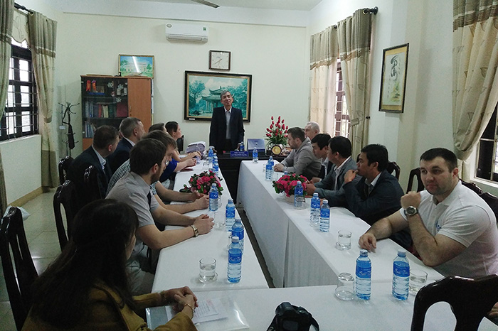
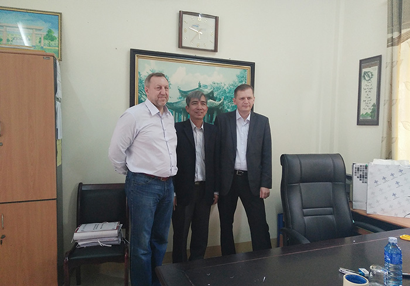
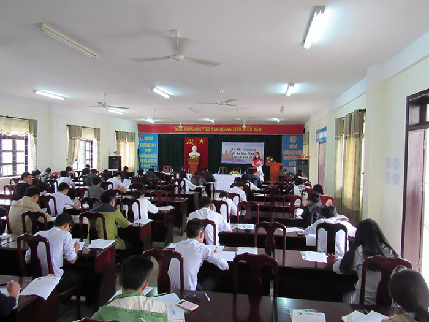
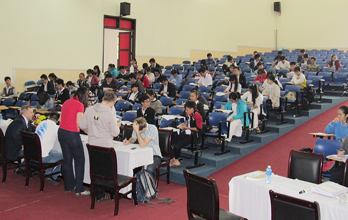
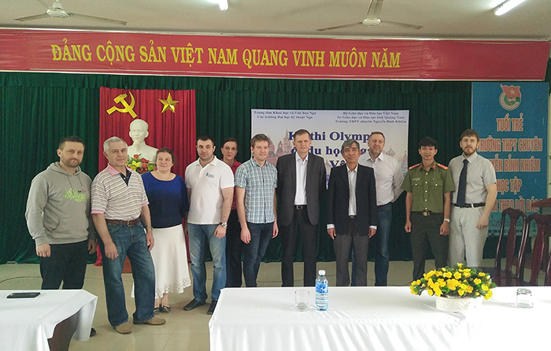

Kết quả cuộc thi Olympic đi du học Nga môn Vật lý 2017

Lần cập nhật cuối lúc Thứ ba, 07 Tháng 3 2017 10:36 Viết bởi Administrator Thứ bảy, 04 Tháng 3 2017 16:05
Ngày 03/3/2017 Trường THPT Chuyên Nguyễn Bỉnh Khiêm - Quảng Nam kết hợp với Trung tâm Khoa học và Văn hóa Nga tại Hà Nội tổ chức thành công Cuộc thi Olympic đi du học Nga môn Vật lý năm 2017.

Tổng số thí sinh dự thi môn Vật lý 201 thí sinh gồm các trường THPT Chuyên Lê Quý Đôn - Đà Nẵng (02 thí sinh), THPT Chuyên Lê Thánh Tông - Quảng Nam (05 thí sinh), THPT Chuyên Nguyễn Bỉnh Khiêm - Quảng Nam (155 thí sinh), THPT chuyên Quốc học - Huế (02 thí sinh), THPT Hiệp Đức - Quảng Nam (02 thí sinh), THPT Hoàng Hoa Thám - Đà Nẵng (18 thí sinh), THPT Lê Quý Đôn - Quảng Nam (01 thí sinh), THPT Lương Thế Vinh - Quảng Nam (04 thí sinh), THPT Lý Tự Trọng - Quảng Nam (04 thí sinh), THPT Nguyễn Trãi - Đà Nẵng (02 thí sinh), THPT Nguyễn Văn Cừ - Quảng Nam (03 thí sinh), THPT Thái Phiên - Quảng Nam (02 thí sinh), THPT Tôn Thất Tùng - Đà Nẵng (01 thí sinh).




Danh sách thí sinh chiến thắng trong cuộc thi Olympic Vật lý năm 2017
- 23/08/2017 07:59 - Bài hát Vang danh ngôi trường chuyên Nguyễn Bỉnh K…
- 18/08/2017 07:44 - Cuộc thi Tìm hiểu pháp luật trực tuyến trên mạng I…
- 06/07/2017 15:55 - Hướng dẫn tra cứu điểm thi và phúc khảo bài thi và…
- 05/07/2017 08:24 - Hướng dẫn thí sinh thực hành điều chỉnh nguyện vọn…
- 29/04/2017 08:00 - Ninh Bình 2017 - Hành trình chinh phục những đỉnh …
- 16/12/2016 08:45 - Thư ngỏ gửi các em cựu học sinh trường THPT Chuyên…
- 21/11/2016 08:43 - Về việc tham gia cuộc thi Giao thông học đường năm…
- 11/11/2016 08:06 - Thiết kế xây dựng tượng cụ Nguyễn Bỉnh Khiêm
- 06/10/2016 07:35 - Đề thi minh họa kỳ thi THPT quốc gia năm 2017
- 29/09/2016 00:00 - Hội nghị Sơ kết thực hiện đề án phát triển hệ thốn…